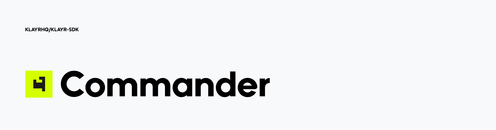

What is Klayr Commander?

Klayr Commander is a command line interface tool designed to be a low entry point, coupled with being the most convenient and user-friendly tool for developers who are looking for an efficient way of coding.
Klayr Commander allows communication from the command line with a remote or local node in order to access and utilise Klayr-related functionalities.
What can be achieved with Klayr Commander?
-
Bootstrapping a blockchain client.
-
Decrypting/encrypting passphrases or messages.
-
Creating new accounts.
-
And much more…
For further details please see the Command-Line-Interface.
Setup
Dependencies
The following dependencies need to be installed to run the Klayr SDK:
| Dependencies | Version |
|---|---|
Node.js |
v18 (latest LTS) |
Pre-installation
Install Node.js
Node.js is supported on most operating systems. Follow the instructions for your operating system on the Node.js downloads page.
NPM is automatically installed along with Node.js.
Usage
| For a full list of all commands and their available options, see the Command-Line-Interface reference. |
klayr
Use npx klayr in case you installed Klayr Commander locally.
|
Type klayr in the command-line to display the command list and general help:
A command line interface for Klayr
VERSION
klayr-commander/6.0.0 darwin-x64 node-v18.16.0
USAGE
$ klayr [COMMAND]
TOPICS
endpoint Invokes the provided endpoint.
generate Commands relating to the Klayr generator.
keys Return keys corresponding to the given passphrase.
message Commands relating to user messages.
passphrase Commands relating to Klayr passphrases.
COMMANDS
autocomplete Display autocomplete installation instructions.
console Klayr interactive REPL session to run commands.
hash-onion Create hash onions to be used by the forger.
help Display help for klayr.
init Bootstrap a blockchain client using the Klayr SDK.
version